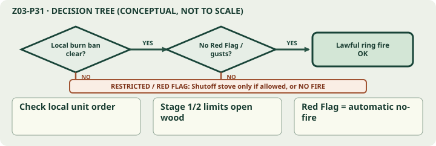

Z03-P31 · Fire and ignition · New manuscript
Interpret Stage 1, Stage 2 and Red Flag fire restrictions accurately
Translate official fire-danger ratings, restriction stages and Red Flag Warnings into immediate legal compliance.
When it applies · All public lands, national forests, state parks and rural camps during dry, windy or fire-season periods.
Equipment · Current agency fire-restriction order, NOAA Weather Radio or alert check and compliant stove or no-fire meal plan.

Actions
- Check current restrictions for the exact county, state forest, park or national forest unit immediately before travel—rules change daily with humidity and drought.[C01, C13]
- Recognize the typical restriction progression: Stage 1 generally limits campfires to developed metal rings and bans dispersed wood fires; Stage 2 generally bans all wood and charcoal fires while sometimes allowing liquid/gas stoves with an on/off valve in cleared areas.[C13, C01]
- Treat a Red Flag Warning (low humidity plus high wind) as an automatic stop to open flames—even where campfires are technically legal, sparks escape containment rapidly.[C18, C02]
Failure recognition · Assuming a fire ring at a backcountry campsite means fires are currently allowed during a regional burn ban or Red Flag Warning.[C01, C13, C18]
Verify · Record the current local restriction level, effective date and whether your specific stove type is explicitly permitted before lighting.[C01, C13, ED]
Stop or change course · When local fire orders ban open flames or stoves, or when current status cannot be verified, use cold meals, battery lights and insulated layers exclusively.[C01, C13, C08]
Evidence and editorial notes
- C01 · Minnesota DNR · Fire Danger and Burning Restrictions (current web edition; verify at use)
- Section: Fire danger and burning restrictions map and links · Conditions: Current Minnesota location, date and jurisdiction
Support: Check current restrictions and local authority requirements before lighting.
Limitations: Restrictions can change daily with humidity, wind, and drought; verify immediately before use. · Conflicting evidence: None; local jurisdiction always supersedes general notes.
Editorial note: Mandatory legal check before any live fire card. · Specialist reviewer: Fire prevention and local land management
Primary source · checked 2026-11-24 - C02 · USDA Forest Service / Smokey Bear · Smokey Bear’s Campfire Safety Guide (agency PDF)
- Section: Build your campfire; choose a location · Conditions: Where campfires are currently permitted
Support: Use an established fire ring where required or available. Protect the area from nearby combustible materials, avoid windy conditions and keep water ready.
Limitations: Site clearances vary by fuel load, slope, and wind; no universal safe radius fits all terrain. · Conflicting evidence: None; aligns with USFS-FIRE.
Editorial note: Grounds site-selection and ring-preparation procedures. · Specialist reviewer: Fire prevention and land management
Primary source · checked 2026-11-24 - C08 · NWS · What To Do If You're Caught in a Winter Storm (current web edition)
- Section: Outside > If there is no shelter nearby · Conditions: Stranded outdoors during a winter storm
Support: Seek shelter and block wind and wet exposure. Reduce heat loss from contact with snow or ground.
Limitations: Does not guarantee overnight survival without adequate insulation or rescue. · Conflicting evidence: None; reinforces no-fire exposure control priority.
Editorial note: Anchors no-fire fallback when ignition fails or is banned. · Specialist reviewer: Cold-weather shelter specialist
Primary source · checked 2026-11-24 - C13 · USDA Forest Service · Know Before You Go: Fire (current web edition)
- Section: Know Before You Go > Campfire Safety and Restrictions · Conditions: National Forest and public lands with seasonal fire restrictions
Support: Fire restriction stages progressively limit open campfires and may permit only liquid/gas stoves with an on/off shutoff valve in cleared areas; check current local orders before departure.
Limitations: Exact Stage 1/2/3 definitions vary by forest unit and state agency. · Conflicting evidence: None; aligns with MN-FIRE.
Editorial note: Supports fire-restriction tier decision trees and stove vs campfire distinctions. · Specialist reviewer: Fire prevention and land management
Primary source · checked 2026-11-24 - C18 · NWS Chicago · Definitions of a Fire Weather Watch and a Red Flag Warning (Current web edition)
- Section: Red Flag Warning and Fire Weather Watch Definitions · Conditions: Local fire weather outlook and land-manager order
Support: A Red Flag Warning means local conditions support extreme fire danger. Check local criteria and restrictions and adjust plans.
Limitations: A wind advisory alone is not a Red Flag Warning or an ignition permit. · Conflicting evidence: See A02 claim audit for boundaries.
Editorial note: Establishes Red Flag / high-wind conditions as automatic no-fire triggers. · Specialist reviewer: Wildland fire safety and meteorology
Primary source · checked 2026-11-25
Source lineage · USFS fire restrictions, MN DNR and NWS wildfire; new manuscript · Classification · New manuscript.